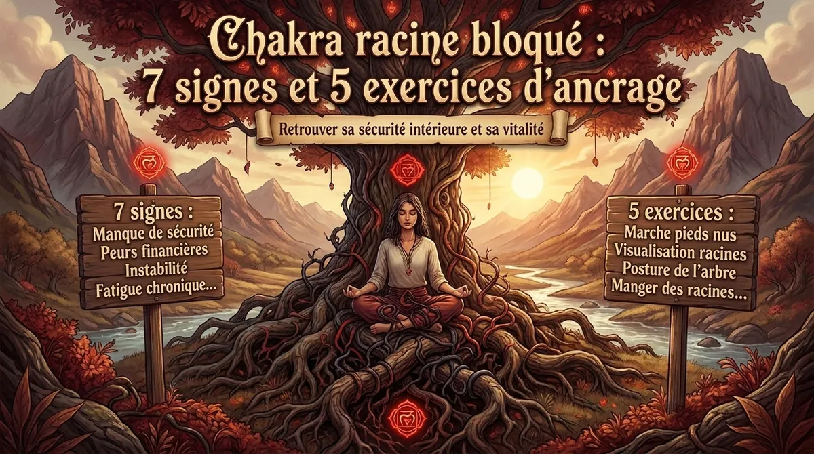
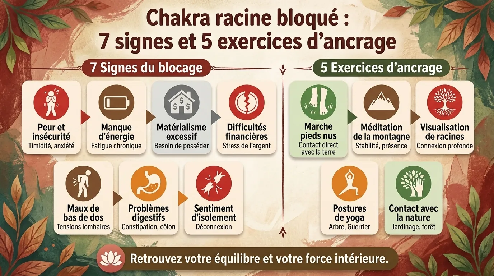

Chakra racine bloqué : 7 signes et 5 exercices d’ancrage

Muladhara, premier chakra : sept signes souvent associés à un chakra racine « bloqué », le lien avec le système nerveux et cinq exercices d’ancrage.
Le chakra racine : avant de vouloir ouvrir le troisième œil, encore faut-il avoir les pieds quelque part
Dans la tradition yogique moderne des chakras, le chakra racine, appelé Muladhara, est présenté comme le premier centre énergétique du corps subtil, situé symboliquement à la base de la colonne vertébrale, associé à la couleur rouge, à l’élément terre et à tout ce qui touche à la stabilité, à la sécurité, au corps physique, aux besoins fondamentaux et à la sensation d’avoir une place dans le monde.
Dit autrement : avant de partir explorer les hauteurs de la conscience, les intuitions extraordinaires et les états méditatifs subtils, le chakra racine pose une question beaucoup moins glamour mais beaucoup plus importante :
Est-ce que je me sens suffisamment stable ici, maintenant, dans mon corps et dans ma vie ?
C’est précisément pour cette raison que les pratiques de chakra racine, d’ancrage énergétique, de méditation d’enracinement ou de grounding restent extrêmement populaires dans le yoga, la méditation, les pratiques corporelles et certains courants de développement personnel.
Il faut toutefois être précis : la science moderne n’a pas démontré l’existence anatomique de chakras sous la forme de centres énergétiques mesurables.
Le chakra racine appartient à une cartographie traditionnelle et symbolique du corps subtil, et non à l’anatomie médicale.
Cela ne rend pas nécessairement inutiles les pratiques qui lui sont associées.
Beaucoup d’exercices dits d’« ancrage du chakra racine » reposent en réalité sur des mécanismes parfaitement concrets : sentir ses pieds, ralentir sa respiration, déplacer son attention vers les sensations corporelles, marcher, contracter puis relâcher les jambes, sentir la gravité, observer son environnement.
Autrement dit, même si l’on choisit de considérer les chakras comme une métaphore plutôt que comme une réalité énergétique littérale, l’ancrage corporel reste une vraie compétence.
Et parfois, une excellente compétence.
Sept signes souvent associés à un chakra racine « bloqué »

Dans les traditions énergétiques contemporaines, on parle de chakra racine bloqué lorsque la personne éprouve une difficulté durable à se sentir stable, présente, sécurisée ou reliée au corps.
Il ne s’agit évidemment pas d’un diagnostic médical.
Mais certains signes reviennent régulièrement.
1. Une anxiété diffuse sans objet précis
Vous n’avez pas nécessairement peur de quelque chose.
Vous avez simplement l’impression que quelque chose pourrait arriver.
Le mental cherche alors une raison à cette tension :
- argent ;
- travail ;
- relation ;
- santé ;
- avenir.
Mais derrière tous ces scénarios existe parfois une sensation corporelle plus primitive :
« Je ne suis pas complètement en sécurité. »
2. Une difficulté à rester dans le moment présent
Votre corps est assis sur une chaise.
Votre esprit, lui, est déjà mardi prochain.
Ou en 2017.
Ou dans une conversation imaginaire qui n’aura probablement jamais lieu.
Cette tendance à vivre dans sa tête est précisément ce que beaucoup de techniques d’ancrage cherchent à contrebalancer.
3. Une agitation corporelle constante
Bouger la jambe.
Changer de position.
Regarder son téléphone toutes les trente secondes.
Passer d’une tâche à une autre.
L’agitation n’est pas nécessairement un problème en soi, mais lorsqu’elle devient permanente, elle peut indiquer que l’organisme peine à rester simplement posé.
4. Une forte sensation d’insécurité
Besoin constant d’être rassuré.
Difficulté à tolérer l’incertitude.
Impression que tout pourrait s’effondrer rapidement.
Dans le langage des chakras, ces expériences sont souvent reliées au chakra racine parce qu’elles touchent directement à la sécurité et à la stabilité.
5. Une déconnexion des sensations corporelles
Certaines personnes connaissent parfaitement leurs pensées mais beaucoup moins leurs sensations.
Demandez :
« Que ressentez-vous dans votre corps ? »
Réponse :
« Je pense que… »
Ce qui était précisément une autre question.
6. Une difficulté avec les changements
Chaque modification de programme ressemble à une mini-catastrophe.
Chaque imprévu donne l’impression que le sol bouge.
L’ancrage travaille justement la capacité à conserver un repère interne même lorsque l’environnement change.
7. Une fatigue accompagnée d’un mental hyperactif
Le corps voudrait dormir.
Le cerveau organise une conférence internationale.
C’est une configuration extrêmement fréquente dans le stress chronique : épuisement physique et activation cognitive persistent simultanément.
Le lien intéressant avec le système nerveux autonome
Même si le chakra Muladhara n’est pas une structure biologique reconnue, il existe un parallèle particulièrement intéressant avec les mécanismes de régulation du système nerveux autonome.
Lorsqu’un organisme perçoit un danger ou une forte incertitude, l’attention devient naturellement plus orientée vers la menace.
Le corps peut se préparer à agir.
La respiration change.
Le tonus musculaire augmente.
Le cerveau surveille davantage l’environnement.
Les exercices d’ancrage prennent le chemin inverse.
Ils disent en quelque sorte au système attentionnel :
« Observe ce qui existe réellement ici. »
Le poids des pieds.
Le contact du dossier.
Le sol.
La température de la pièce.
Un son.
Une couleur.
Une respiration.
Cette stratégie ressemble fortement aux techniques de grounding utilisées en psychologie, notamment pour réduire une activation émotionnelle trop importante ou aider une personne à revenir vers des informations sensorielles présentes.
Le principe n’est donc pas :
« Je vais magiquement réparer mon chakra rouge. »
Il peut être beaucoup plus concret :
« Je vais sortir quelques instants du scénario mental pour retrouver les informations envoyées par mon corps et mon environnement. »
Ce qui, avouons-le, est déjà une excellente utilisation de cinq minutes.

Cinq exercices d’ancrage pour le chakra racine

Exercice 1 — Les pieds lourds
Debout, pieds écartés à la largeur des hanches.
Ne visualisez rien pendant les premières secondes.
Sentez simplement :
- le talon ;
- l’avant du pied ;
- les orteils ;
- la pression sur le sol.
Puis transférez doucement le poids vers l’avant.
Vers l’arrière.
À gauche.
À droite.
Revenez au centre.
Imaginez ensuite seulement que le poids du corps descend davantage dans le sol.
Cet exercice paraît presque trop simple.
C’est précisément son intérêt.
L’attention quitte la tête et revient vers la gravité.
Exercice 2 — Marche consciente de dix minutes
Marchez lentement, mais pas théâtralement.
Vous n’êtes pas obligé de ressembler à un moine dans un documentaire.
Sentez simplement :
- le talon qui touche ;
- le déroulement du pied ;
- la poussée des orteils ;
- le mouvement du bassin ;
- le balancement des bras.
Chaque fois que le mental repart vers un problème, revenez à un pas.
Puis au suivant.
La marche consciente constitue l’une des meilleures pratiques de méditation pour les personnes qui trouvent difficile de rester immobiles.
Exercice 3 — Respiration basse
Posez une main sur le ventre.
Inspirez tranquillement.
Observez le léger mouvement abdominal.
Puis expirez sans forcer.
N’essayez pas de respirer « énormément ».
Cherchez plutôt une respiration douce, basse et confortable.
Pendant cinq minutes, associez chaque expiration à la sensation de poids.
Exercice 4 — Le 5-4-3-2-1 sensoriel
Regardez autour de vous et trouvez :
- 5 choses que vous voyez ;
- 4 choses que vous pouvez toucher ;
- 3 sons ;
- 2 odeurs ;
- 1 goût ou sensation dans la bouche.
Cette méthode n’appartient pas historiquement aux traditions des chakras, mais elle constitue un excellent exemple de grounding sensoriel.
Elle fonctionne particulièrement bien lorsque l’esprit part dans des scénarios anxieux.
Exercice 5 — La posture de la montagne
Debout.
Pieds stables.
Genoux non verrouillés.
Bassin neutre.
Colonne droite.
Épaules relâchées.
Sommet du crâne vers le haut.
La posture de la montagne, Tadasana, paraît immobile, mais elle demande énormément de présence corporelle.
Sentez simultanément deux directions :
- le poids descend ;
- la colonne s’allonge.
C’est presque toute la symbolique du chakra racine résumée dans une posture.
La méditation d’ancrage de cinq minutes
Asseyez-vous.
Commencez par sentir les pieds.
Puis les jambes.
Puis le bassin.
Pendant une minute entière, ne cherchez rien d’autre.
Imaginez ensuite que votre respiration descend vers le bas du ventre.
Bien sûr, l’air ne descend pas réellement jusqu’au bassin : c’est une image attentionnelle.
À chaque expiration, imaginez davantage de poids.
Puis visualisez éventuellement une couleur rouge sombre à la base du bassin.
Vous pouvez répéter mentalement :
« Ici. »
« Maintenant. »
« Sol. »
« Corps. »
Rien de spectaculaire.
L’ancrage est précisément l’art de retrouver l’ordinaire.
Quand l’ancrage suffit… et quand il faut chercher autre chose
Les techniques d’ancrage peuvent être utiles pour le stress ordinaire, l’agitation, les ruminations et certaines sensations de déconnexion passagère.
Mais elles ne remplacent pas un accompagnement médical ou psychologique lorsqu’une personne souffre d’une anxiété importante, d’attaques de panique, de symptômes traumatiques, d’une dissociation persistante ou d’une détresse qui perturbe fortement sa vie quotidienne.
Dans ce cas, on peut parfaitement garder les exercices corporels comme outil complémentaire tout en cherchant une aide professionnelle.
Le chakra racine peut alors rester une image intéressante.
Mais aucune image spirituelle ne devrait empêcher de prendre au sérieux un problème réel.
Et peut-être est-ce finalement cela, le meilleur ancrage :
rester suffisamment connecté à la réalité pour utiliser chaque outil à sa juste place.
Questions fréquentes
Comment savoir si mon chakra racine est bloqué ?
Dans les traditions énergétiques, on associe généralement un chakra racine déséquilibré à l’insécurité, l’agitation, la peur, la difficulté à se sentir présent et la déconnexion du corps. Ces signes ne constituent cependant pas un diagnostic médical.
Quelle couleur est associée au chakra racine ?
Le chakra Muladhara est généralement représenté en rouge dans les systèmes modernes des sept chakras.
Quel est le meilleur exercice pour débloquer le chakra racine ?
La marche consciente, la posture debout, le travail des pieds, la respiration basse et les exercices sensoriels constituent d’excellentes pratiques d’ancrage.
Combien de temps pratiquer l’ancrage ?
Cinq à dix minutes quotidiennes suffisent pour commencer. La régularité est généralement plus utile qu’une séance très longue réalisée occasionnellement.
Envie de pratiquer plutôt que de lire ?
Tout ce que décrit cet article se pratique dans MeditaDream, application de méditation gratuite : 129 méditations guidées et 17 mondes immersifs en français, sans abonnement, sans publicité, sans compte, et tout fonctionne hors ligne.
✦ Découvrir l'application gratuite